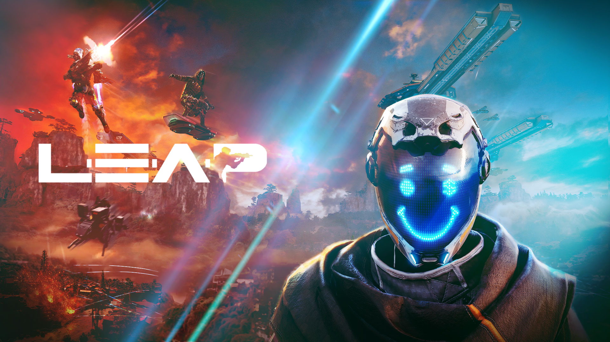

LEAP

- Platform: PS5, Xbox Series X, Xbox Series S, PS4, Xbox One, PC (Steam)
- Tanggal Rilis: 1 Maret 2023
Game dengan judul LEAP ini merupakan karya terbaru dari developer di balik kesuksesan Citadel Forged With Fire yaitu Blue Isle Studios. Game ini mengusung tema FPS cepat dengan 60 player yang akan saling bertempur dalam lokasi bernama hoverboard. Mengambil Setting sci-fi membuat game ini bisa pemain inovasikan dengan berbagai imajinasi.
Dalam game ini, pemain nantinya bisa memilih salah satu dari dua perusahaan yaitu United Earth Defence Coalition atau Exo-Terrans sebelum terjun dan bertempur. Terdapat empat class yang bisa pemian pilih dalam game ini. Masing-masing class miliki beberapa keunikan seperti power, agility, dan juga defence.
Resident Evil 4 Remake
- Platform: PS5, Xbox Series X, Xbox Series S, PS4, PC (Steam)
- Tanggal Rilis: 24 Maret 2023
Tidak bisa dipungkiri bahwa generasi yang tumbuh saat konsol PlayStation 2 sedang jaya-jayanya, pasti mengenal sederet game yang memorable sampai saat ini. Salah satu game yang dimaksud adalah game Resident Evil 4. Di mana, franchise Resident Evil ini mendapatkan kesempatan untuk kembali dibuat ulang alias remake untuk perangkat gaming terkini seperti PS4, PS5, Xbox Series X/S, hingga PC. Game yang dirilis pada tahun 2005 ini menjadikan game Resident Evil 4 Remake sebagai seri kesekian dari franchise Resident Evil yang mendapatkan remake, setelah Resident Evil 2 dan Resident Evil 3 dengan meraih sambutan positif. Nantinya, cerita yang dihadirkan dalam game Resident Evil 4 Remake masih tetap sama, namun sajian kualitas grafisnya jelas mengalami banyak peningkatan.
Seperti yang disebutkan sebelumnya bahwa game rilisan Capcom ini dirilis pertama kalinya di tahun 2005 untuk beberapa pilihan konsol seperti PlayStation 2, Xbox, hingga Nintendo GameCube. Di mana, Resident Evil 4 dianggap sebagai seri Resident Evil terbaik sepanjang masa dan sampai sekarang masih banyak dimainkan. Padahal, game ini sudah berusia 18 tahun sehingga jarak game Resident Evil 4 Remake nantinya dengan versi aslinya sangat jauh. Sementara untuk seri Resident Evil 2 dan Resident Evil 3 Remake bahkan memiliki jarak hingga 21 tahun dengan versi aslinya. Tidak heran, jika hal ini menjadi daya tarik sendiri nantinya bagi setiap pemain yang tumbuh dengan memainkan game ini.
Lanjut ke fakta menarik berikutnya di bagian engine yang berperan penting dalam menghadirkan kualitas grafis terbaik. Di mana, game Resident Evil 4 Remake masih menggunakan RE Engine yang sebelumnya sudah digunakan oleh dua versi remake-nya dan seri dua paling barunya yaitu Resident Evil VII dan VIII. Capcom sendiri sebelumnya menggunakan engine MT Framework sejak Resident Evil 5. Di mana, kelebihan dari RE Engine sendiri tidak perlu diragukan lagi karena menjadi pilihan engine terbaik bagi Capcom untuk bersaing di industri game era modern saat ini. Tentunya dengan menghadirkan kualitas grafis terbaik di dalamnya.
The Last of Us part I

- Platform: PC (Steam, Epic Games Store)
- Tanggal Rilis: 28 Maret 2023
Ketika proyek ini pertama kali diperkenalkan oleh Naughty Dog untuk Playstation 5, kritik memang sempat mengemuka. Bahwa game “tua” yang sudah sempat melewati proses Remastered ini masihlah bagus adanya hingga ia tidak perlu lagi melewati proses remake, terlepas dari fakta bahwa ia akan dibangun ulang menggunakan engine The Last of Us Part II yang lebih memesona dari sisi presentasi audio dan visual. Berita baiknya? Perubahan yang ditawarkan cukup signifikan dari sisi narasi, terutama untuk emosi dan ekspresi wajah karakter yang memesona. Sesuatu yang akhirnya akan bisa dicicipi gamer PC dalam waktu dekat.
Namun sayangnya, tidak sedekat yang dibayangkan. Bersama dengan resepsi super positif yang diterima oleh film serinya yang berdiri di bawah bendera HBO, Naughty Dog justru memutuskan untuk menunda rilis The Last of Us Part I versi PC selama beberapa minggu lebih lambat. Mereka mengaku butuh ekstra beberapa minggu ini untuk memastikan rilis versi final PC-nya memang sesuai dengan standar Anda dan mereka. Mereka juga berjanji akan berbagi lebih banyak informasi terkait versi PC ini dalam waktu dekat.
Crime Boss: Rockay City

- Platform: PC (Epic Games Store)
- Tanggal Rilis: 29 Maret 2023
Ketika kita bicara soal game dengan tema organisasi kriminal, maka sebagian besar dari kita mungkin akan langsung memikirkan nama Grand Theft Auto dari Take Two Interactive dan Rockstar Games. Beberapa mungkin mengarah ke seri Mafia yang juga menjual tema ini dari beragam titik sejarah berbeda. Ada pula produk seperti Payday 2 yang lebih menonjolkan pengalaman kooperatif dengan fokus pada aksi perampokan di beragam lokasi. Siapa yang mengira bahwa di tema yang terhitung niche ini, sebuah kekuatan baru muncul. Kerennya lagi? Ia membawa begitu banyak bintang lawas di dalamnya.
Publisher 505 Games dan developer Ingame Studios secara resmi mengumumkan game teranyar bertajuk Crime Boss: Rockay City dengan kerjasama erat bersama dengan Epic Games. Ia didefinisikan sebagai game FPS shooter kooperatif bertema kriminal, yang sepertinya siap mengingatkan Anda dengan konsep ala Payday. Tak main-main, game ini membawa begitu banyak nama besar lawas seperti Vanilla Ice, Danny Trejo, Danny Glover, Michael Rooker, hingga Chuck Norris. Benar sekali, Chuck Norris yang legendaris tersebut akan berperan sebagai Sheriff di sini.